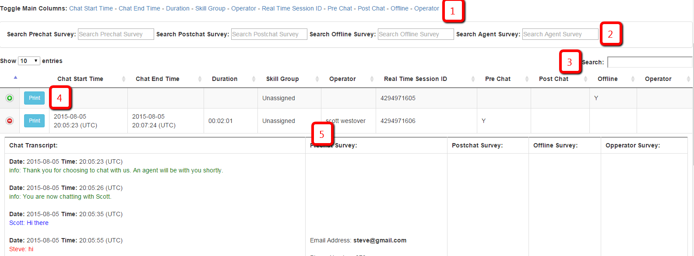
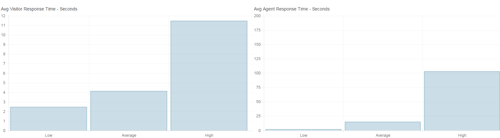
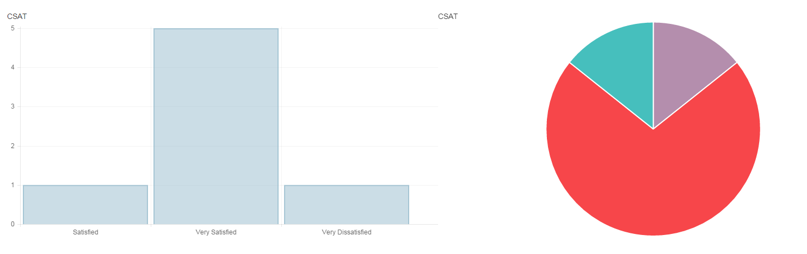
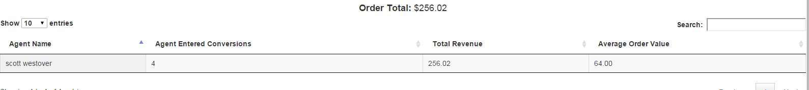

Chat Transcripts
The chat transcripts tab will allow you to review each chat transcript and veiw all of the meta data tied to that chat.
- Toggle the columns in the table to make them visible/hide them
- Seach each survey individually. The table will update to only have chats with that information
- Seach all chat transcripts. The table will update to only have chats with that information
- Print the individual chat with all of the meta data tied to it
- Click on a row to expand/detract it. The expanded row will show the chat transcript, survey information, and the rest of the meta data.

Visitor/Agent Response Time
The Visitor/Agent Response time tab will allow you to see your visitor's average response time, your agents average response time, and the individual average response time for each agent.
CSAT Reporting
The CSAT Reporting tab will allow you to see the total number of responses you recieved for each rating on the CSAT question.
Note: For this report to load, you must be using the CSAT type question in LiveEngage, and the ID of the question must be "chat_customer_satisfaction_1".
Revenue Reporting
The Revenue Reporting tab will allow you to see the total revenue that your agents entered into the agent survey. The report will show each agents total number of entered conversions, the total revenue amount, and the average order value.
Note: For this report to load, you must enter Order Total Variable into the input field before you load the chat transcripts XML file.
Map